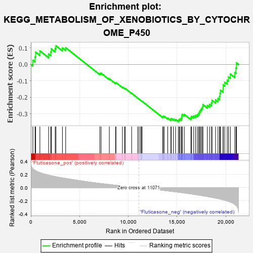
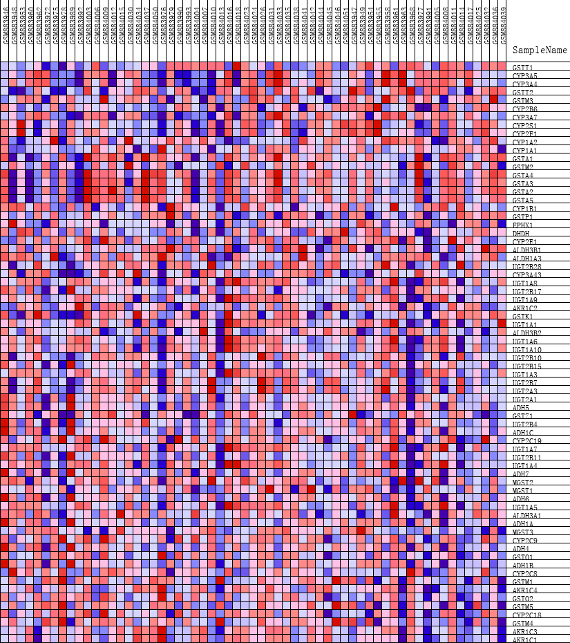
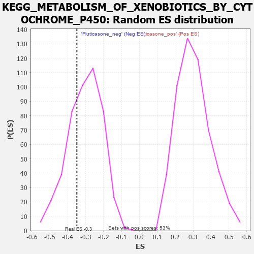

| | | Dataset | GSEA_expr_Flu.GSEA_timepoint.cls#Fluticasone |
| Phenotype | GSEA_timepoint.cls#Fluticasone |
| Upregulated in class | Fluticasone_neg |
| GeneSet | KEGG_METABOLISM_OF_XENOBIOTICS_BY_CYTOCHROME_P450 |
| Enrichment Score (ES) | -0.34885558 |
| Normalized Enrichment Score (NES) | -1.1441871 |
| Nominal p-value | 0.3121019 |
| FDR q-value | 1.0 |
| FWER p-Value | 0.972 |
Table: GSEA Results Summary

Fig 1: Enrichment plot: KEGG_METABOLISM_OF_XENOBIOTICS_BY_CYTOCHROME_P450
Profile of the Running ES Score & Positions of GeneSet Members on the Rank Ordered List
| PROBE | DESCRIPTION
(from dataset) | GENE SYMBOL | GENE_TITLE | RANK IN GENE LIST | RANK METRIC SCORE | RUNNING ES | CORE ENRICHMENT | | 1 | GSTT1 | NA | | | 204 | 0.285 | 0.0254 | No |
| 2 | CYP3A5 | NA | | | 430 | 0.261 | 0.0468 | No |
| 3 | CYP3A4 | NA | | | 492 | 0.255 | 0.0753 | No |
| 4 | GSTT2 | NA | | | 926 | 0.228 | 0.0829 | No |
| 5 | GSTM3 | NA | | | 1824 | 0.189 | 0.0639 | No |
| 6 | CYP2B6 | NA | | | 2042 | 0.181 | 0.0759 | No |
| 7 | CYP3A7 | NA | | | 2100 | 0.179 | 0.0952 | No |
| 8 | CYP2S1 | NA | | | 2492 | 0.168 | 0.0974 | No |
| 9 | CYP2F1 | NA | | | 2575 | 0.165 | 0.1138 | No |
| 10 | CYP1A2 | NA | | | 3238 | 0.148 | 0.1007 | No |
| 11 | CYP1A1 | NA | | | 3571 | 0.140 | 0.1023 | No |
| 12 | GSTA1 | NA | | | 7078 | 0.064 | -0.0549 | No |
| 13 | GSTM2 | NA | | | 7206 | 0.062 | -0.0533 | No |
| 14 | GSTA4 | NA | | | 8049 | 0.047 | -0.0872 | No |
| 15 | GSTA3 | NA | | | 8696 | 0.037 | -0.1131 | No |
| 16 | GSTA2 | NA | | | 8728 | 0.036 | -0.1101 | No |
| 17 | GSTA5 | NA | | | 9391 | 0.026 | -0.1381 | No |
| 18 | CYP1B1 | NA | | | 9611 | 0.022 | -0.1457 | No |
| 19 | GSTP1 | NA | | | 9675 | 0.021 | -0.1461 | No |
| 20 | EPHX1 | NA | | | 10337 | 0.011 | -0.1759 | No |
| 21 | DHDH | NA | | | 10953 | 0.002 | -0.2047 | No |
| 22 | CYP2E1 | NA | | | 11092 | -0.000 | -0.2111 | No |
| 23 | ALDH3B1 | NA | | | 11250 | -0.003 | -0.2182 | No |
| 24 | ALDH1A3 | NA | | | 11350 | -0.004 | -0.2223 | No |
| 25 | UGT2B28 | NA | | | 11409 | -0.005 | -0.2244 | No |
| 26 | CYP3A43 | NA | | | 13539 | -0.040 | -0.3197 | No |
| 27 | UGT1A8 | NA | | | 13577 | -0.041 | -0.3164 | No |
| 28 | UGT2B17 | NA | | | 13681 | -0.043 | -0.3160 | No |
| 29 | UGT1A9 | NA | | | 14036 | -0.049 | -0.3266 | No |
| 30 | AKR1C2 | NA | | | 14366 | -0.055 | -0.3354 | No |
| 31 | GSTK1 | NA | | | 14400 | -0.056 | -0.3300 | No |
| 32 | UGT1A1 | NA | | | 14614 | -0.060 | -0.3328 | No |
| 33 | ALDH3B2 | NA | | | 14846 | -0.063 | -0.3359 | No |
| 34 | UGT1A6 | NA | | | 15123 | -0.068 | -0.3405 | Yes |
| 35 | UGT1A10 | NA | | | 15226 | -0.070 | -0.3367 | Yes |
| 36 | UGT2B10 | NA | | | 15306 | -0.072 | -0.3316 | Yes |
| 37 | UGT2B15 | NA | | | 15464 | -0.075 | -0.3298 | Yes |
| 38 | UGT1A3 | NA | | | 15476 | -0.075 | -0.3211 | Yes |
| 39 | UGT2B7 | NA | | | 15506 | -0.076 | -0.3131 | Yes |
| 40 | UGT2A3 | NA | | | 15519 | -0.076 | -0.3043 | Yes |
| 41 | UGT2A1 | NA | | | 15733 | -0.080 | -0.3045 | Yes |
| 42 | ADH5 | NA | | | 16414 | -0.094 | -0.3249 | Yes |
| 43 | GSTZ1 | NA | | | 16486 | -0.096 | -0.3165 | Yes |
| 44 | UGT2B4 | NA | | | 16705 | -0.101 | -0.3143 | Yes |
| 45 | ADH1C | NA | | | 16900 | -0.105 | -0.3105 | Yes |
| 46 | CYP2C19 | NA | | | 17081 | -0.110 | -0.3055 | Yes |
| 47 | UGT1A7 | NA | | | 17214 | -0.113 | -0.2978 | Yes |
| 48 | UGT2B11 | NA | | | 17296 | -0.115 | -0.2875 | Yes |
| 49 | UGT1A4 | NA | | | 17391 | -0.117 | -0.2775 | Yes |
| 50 | ADH7 | NA | | | 17495 | -0.120 | -0.2677 | Yes |
| 51 | MGST2 | NA | | | 17606 | -0.122 | -0.2578 | Yes |
| 52 | MGST1 | NA | | | 17650 | -0.124 | -0.2447 | Yes |
| 53 | ADH6 | NA | | | 18102 | -0.134 | -0.2495 | Yes |
| 54 | UGT1A5 | NA | | | 18341 | -0.141 | -0.2434 | Yes |
| 55 | ALDH3A1 | NA | | | 18530 | -0.146 | -0.2344 | Yes |
| 56 | ADH1A | NA | | | 18587 | -0.147 | -0.2189 | Yes |
| 57 | MGST3 | NA | | | 18948 | -0.157 | -0.2166 | Yes |
| 58 | CYP2C9 | NA | | | 19192 | -0.164 | -0.2078 | Yes |
| 59 | ADH4 | NA | | | 19353 | -0.170 | -0.1945 | Yes |
| 60 | GSTO1 | NA | | | 19399 | -0.172 | -0.1755 | Yes |
| 61 | ADH1B | NA | | | 19455 | -0.174 | -0.1568 | Yes |
| 62 | CYP2C8 | NA | | | 19724 | -0.184 | -0.1468 | Yes |
| 63 | GSTM1 | NA | | | 19727 | -0.184 | -0.1243 | Yes |
| 64 | AKR1C4 | NA | | | 19889 | -0.190 | -0.1085 | Yes |
| 65 | GSTO2 | NA | | | 20140 | -0.201 | -0.0956 | Yes |
| 66 | GSTM5 | NA | | | 20272 | -0.208 | -0.0762 | Yes |
| 67 | CYP2C18 | NA | | | 20461 | -0.218 | -0.0583 | Yes |
| 68 | GSTM4 | NA | | | 20920 | -0.254 | -0.0486 | Yes |
| 69 | AKR1C3 | NA | | | 21041 | -0.268 | -0.0214 | Yes |
| 70 | AKR1C1 | NA | | | 21098 | -0.276 | 0.0098 | Yes |
Table: GSEA details [plain text format]

Fig 2: KEGG_METABOLISM_OF_XENOBIOTICS_BY_CYTOCHROME_P450
Blue-Pink O' Gram in the Space of the Analyzed GeneSet

Fig 3: KEGG_METABOLISM_OF_XENOBIOTICS_BY_CYTOCHROME_P450: Random ES distribution
Gene set null distribution of ES for KEGG_METABOLISM_OF_XENOBIOTICS_BY_CYTOCHROME_P450